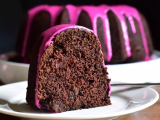

Beet Cake

Description
'Description' of Beet Cake
Ingridents
Cake:
- 1.75c AP flour
- 1c Cocoa powder
- 2tsp Baking soda
- 1.2tsp Salt
- 4ea Eggs, separated
- 1c Brown sugar
- 1c White sugar
- 0.5c Butter
- 0.25c Vegetable oil
- 1.25c Cooked beets, pureed
- 1tbsp Vanilla extract
- 1c Buttermilk
- 1.5c Chocolate chips
Glaze:
- 1c Powdered Sugar
- 2tbsp Heavy Cream
- 2tsp Cooked beets, pureed
- 1tsp Vanilla extract
- 1pinch Salt
Steps
- Preheat oven to 350 degrees F (175 degrees C).
Grease a 10 cup Bundt pan with a baking spray containing flour.
- Sift together flour, cocoa powder, baking soda, baking powder, and salt into a bowl.
- Separate eggs. Place egg whites into a bowl,
and whip on high speed until stiff peaks form. Set aside.
- Cream together brown sugar, white sugar, butter, and oil in a large bowl with an electric mixer
for 2 to 3 minutes. Add egg yolks and beat for another 3 minutes.
Mix in beet puree and vanilla. Add in half of the sifted flour mixture, and mix until just combined.
Pour in buttermilk and mix until just combined. Add in remaining flour mixture and mix
until just combined. Fold in chocolate chips.
- Add 1/3 of whipped egg whites to the cake batter, and gently fold to combine.
Add in remaining egg whites, and gently fold just until no streaks of egg white remain.
Pour batter into the prepared pan and gently smooth top into an even layer
- Bake in the preheated oven until top of cake springs back lightly when touched (or until a bamboo skewer inserted into the center of the cake comes out with a few moist crumbs),
50 to 55 minutes. Allow cake to cool in the pan for 20 minutes
before gently running a knife around the edges of the cake to loosen.
Invert cake onto a wire rack, and cool completely.
- To make the glaze combine powdered sugar, heavy cream, beet puree, vanilla extract,
and salt in a bowl. Whisk until smooth. If glaze is too thick, add more heavy cream;
if glaze is too thin, add more powdered sugar until desired consistency is reached.
Drizzle glaze over cooled cake.